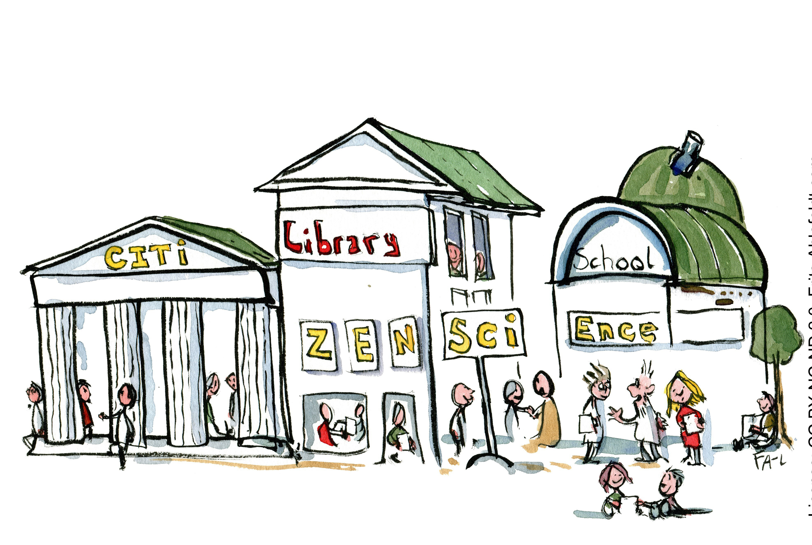

Print and PDF design template (CC BY-SA). Multi-format template (CC BY-SA). Fonts: CrimsonText and Lato, these fonts are licensed under the SIL Open Font License (OFL) https://scripts.sil.org/OFL.
Free and Open Source Software used in production – Fidus Writer (GNU AFFERO GPL), Vivliostyle (GNU AFFERO GPL), Weblate (GNU GPLv3+), Hugo (Apache License Version 2.0). All other open-source software OSI license compliant.
Acknowledgment of Citizen Scientists on Research Outputs
Project Highlight: Lizard Conservation with the Balanggarra Rangers in Australia
Planning and Securing Resources — The Data Management Plan
Project Highlight: FAIR Data in a Citizen Science Project
Project Highlight: The INOS Project
Scientific Literacy
Increasing Scientific Literacy with Citizen Science
Foreword
Thomas Kaarsted and Simon Worthington, Co-Editors-in-Chief
The guide series Citizen Science for Research Libraries is brought to you by the LIBER Citizen Science Working Group. The aim of the publications is to provide access to the new open infrastructures and open science know-how that libraries have on offer for citizen science projects.
The guide is designed to be a practical toolbox to help run a citizen science project. It has been put together from contributions by members of the research library community and has been thoroughly peer-reviewed. The guide is part of a themed series of four sections based on the LIBER Open Science Roadmap (Ayris et al. 2018) that cover the essentials to support citizen science projects: skills, infrastructures, good practice, and programme development.
Researchers have been branching out into new areas of citizen science as digital services have pervaded many parts of people’s lives, such as — wearable health tracking; data on COVID‑19, energy, or transport; and for climate change mitigation and monitoring. Research libraries are in a unique position to offer up the frameworks and infrastructures built by the open science movement for wider use by researcher in society. In the guide series we are aiming to share examples of such projects.
Citizen science is a key pillar of open science. The UNESCO Recommendation on Open Science (UNESCO 2021) for the first time creates consensus on definitions and principles for open science. Citizen science plays a variety of roles in the overall open science endeavour of the democratization of knowledge such as — fostering trust in science, in data gathering and cooperations, and being more equitable — with our guide offering a contribution in capacity building for such values.
Ayris, Paul, Isabel Bernal, Valentino Cavalli, Bertil Dorch, Jeannette Frey, Martin Hallik, Kristiina Hormia-Poutanen, et al. 2018. “Liber Open Science Roadmap.” doi:10.5281/ZENODO.1303002.
UNESCO. 2021. “UNESCO Recommendation on Open Science.” https://unesdoc.unesco.org/ark:/48223/pf0000378381.
Introduction
Citizen science as a scientific discipline is inevitably linked to the creation of data: identifying which data may answer your questions by using citizen science, attracting citizens and other stakeholders interested in the data, collecting data, telling the story of the data, and repurposing data. Citizen science can increase scientific literacy by use of data.
In this section, you will learn which skills can support a citizen science project across its life cycle and facilitate its success. These skills relate to project management, communication, management of research data and integrating scientific literacy into the project. Identifying persons and resources to the different tasks of the project already from the beginning may be a daunting task. However, realising and incorporating skills is a huge step towards creating a project that brings quality to not only the data, but also an experience of quality participation to the citizen scientist.
It is important to note that citizen science belongs to the open science domain, and is therefore perceived as a method, where research data are shared at large with open access to publications and full transparency of data availability. However, data use has to comply with ethical and legal obligations, such as GDPR, and with the expectations of the citizens. Accordingly, the FAIR principles do also have a role to play for citizen science data. The principles can help navigate the open science expectations and engagement of the citizens with the actual possibilities for sharing and reuse.
How to obtain good quality citizen science data is not addressed in this section, but it is inevitably linked to the possibility of reusing the data. A task of the research librarian is also to convey to the researcher or project holder, why project management and good research data management practices are important: Quality data emerges from good management. If the citizen experiences that the project produces quality data fit for reuse and creating impact, this could empower the citizen and is a strong motivation factor.
The skills highlighted in the section may due to their diversity not all be embedded in the research library initially. Therefore, the intention is to help clarify which support is already present and which skills should be developed or sought elsewhere. Hopefully, this guide can create momentum for the development of library services directed at citizen science. Academic researchers and project managers should be able to extract useful knowledge about management of citizen science projects and their data, and where to obtain more information.
Learn how citizens and other stakeholders have a role to play at many points during the project life cycle:
how they are involved in project management and co-creation,
how communication with them could be handled, and
what are the obligations pertaining to the data and knowledge provided.
Get practical advice on project management and communication planning.
Identify elements of FAIR data that require particular attention in citizen science projects.
Understand how scientific literacy can be used for co-creation and education in citizen science.
Project Planning and Communications
Project Planning: A Step-by-Step Guide
This project plan is a generic guide on how to run the practical side of a citizen science project with regards to planning and governance. It is based on the condition that a researcher or Principal Investigator (PI) leads the project. Assisting the PI is a Project Manager (PM), who is responsible for practicalities in close dialogue with the PI. The role of the PM is sometimes defined as Community Manager, based on the scope and communication of the project. Library staff in many ways are suited for the role as PM or project coordinator.
By Line Laursen, University of Southern Denmark, e-mail: linel@bib.sdu.dk and Thomas Kaarsted, University of Southern Denmark, ORCID iD: 0000-0001-6796-5753 e-mail: thk@bib.sdu.dk Article DOI: 10.25815/r3nj-fd31. The Project Planning guide stems from the work at SDU and the templates and tools we offer.
It’s important that this generic plan is supplemented with e.g., a GANNT chart for organisational and time managing purposes, as well as other helpful tools such as a stakeholder analysis, communication plan and risk analysis. In some cases, the project plan cannot be outlined until funding is applied for and awarded. This guide does not cover that. Furthermore, if you are venturing in a multi-partner or EU project, this guide is hardly sufficient. It does also not take into account citizen-led or -initiated projects.
The project plan
Work on a citizen science project can roughly be divided into three phases. The BEFORE (step 1-5) where the project is initiated and planning is carried out. The DURING (step 6-8) where the project goes public. The AFTER (step 9) where evaluation, analysis, scientific outcome, and communication to and with participants is carried out.
BEFORE
Step 1: Definition of goal(s)
The overall outcome of the project is defined. This should provide a clear picture of what the researcher wants to investigate, who has an interest in participating and the goal(s) of the project. At this point, common ground is laid between the PI and PM in a dialogue with indispensable stakeholders, optimally including citizens. Which research objective or perhaps question is covered? The overall goals could be e.g.
What is the research objective? How will it be investigated or expanded?
The central elements with regards to public engagement and data collection: What is the motivation and outcome for citizens and potential partners. Already at this point consider: What’s in it for the citizens? This means that the scholar should explain how his/her research relates to citizens’ preoccupations or areas of interest. An alternative approach would be to involve citizens in the definition of the research question.
Internal goal setting: Aligning the goals and roles between PI, PM, administration, possible partners, and citizens.
Step 2: Stakeholder analysis
In order to operationalize the objective and goals, a stakeholder analysis could be carried out. We suggest this template in order to identify stakeholders and possible partners. Stakeholders can be very varied depending on the project and cover institutions, organizations, groups, or individuals that could have an interest or stake in the outcome or goals of the project. Stakeholders could also be researchers, peers, students or pupils (in which case the project could have a learning component).
After identifying stakeholders, a dialogue is established and stakeholders are onboarded. They should help form the project and outline their role. In this phase, ‘must be’ stakeholders who are critical for the outcome of the project are identified.
Citizens, of course, are at the core of every citizen science project. The steps above focus on organized groups or institutions that represent other citizens. This is not to marginalize the individual, but to suggest a structured approach. Individuals are also reached through the communication plan.
Step 3: Project goals and milestones
Once the outcome and stakeholders are onboard, the project timeline is defined. We recommend that the PI and PM spend a fair amount of time on a realistic and detailed plan that covers the main deliveries and assess the needed resources. A definition of the tasks and milestones (main deliveries) enables the PM to work based on a critical overview. A detailed timeline should include target dates and identifying risks. As mentioned above, a GANNT chart could be recommended. Also, data management is addressed. See Management of Citizen Science Data onwards. Quite often a research library offers specialists within the field.
Step 4: Assess resources and costs
Once the timeline is complete it’s possible to create an overview of the resources and costs needed. Almost all projects come to fruition after a potential lengthy application and budget process. Otherwise the budget is outlined by the PI and PM in unison. By resources we mean both human and monetary.
Human: Researchers, research assistants, student help, communication, data management, visualization of data, it-infrastructure, and administration.
Monetary: The cost of recruiting citizens, conducting workshops, town hall meetings, building apps, boosting via social media, producing video, buying equipment, tools, as well as travel costs etc.
With regards to human resources are the right competences present? Who does what? Occasionally, communication and community management are underestimated, leaving motivation and thus potentially data and outcome in jeopardy. This is one of the things to be addressed in the risk assessment analysis (step 5). At this point, it’s important to address which target group or groups the project aims at as this is critical for assessing risk vs. outcome with regards to resources. Communication also comes as a premium. No later than this step, a communication plan is devised. A data management plan to overview resources needed for handling data and possible ethical and legal advice should optimally be drafted. You might also explore if the project could be evaluated by learning outcome or science literacy in case pupils or students participate.
Step 5: Risk analysis checklist
Risk analysis can help manage the potential problems and uncertainties in a citizen science project, including, where the a lack of skills or resources could become a problem. The analysis should be done in each phase of the project. There are a vast number of risk analysis matrices, templates and models readily available online. Very few, however, address research projects let alone citizen science projects.
Note: Some citizen science projects e.g. within health science have serious GDPR and ethic considerations. This should be addressed before the project is outlined as a very first step.
Below you’ll find some observations and tips that can help structure your thinking. Risk, in this sense, is not meant as danger. It does not e.g. address unsupervised kids collecting data in a particular environment (although this is certainly a risk). The risk analyses should optimally be carried by the PI and PM together with staff with knowledge and insights in their specialist areas.
Brainstorm on potential troublesome areas. Every area should be included. From research outcome to data collection, to communication, retention and recruitment of citizens, to ethics, GDPR etc. Ask yourself: What could go wrong in this particular area?
What are the potential negative consequences? When the areas are identified, rate them on a scale from 1-5, where 5 is a risk that potentially can shut down the project.
How likely are the risks to happen? Again, rated from 1-5, where 5 is inevitable.
Multiply the numbers and you’ll end up with a list of potential risks rated from 1-25. Again, a score of 25 might close the project.
Make a prioritized list. Which risks should be on the project’s risk list?
How do you handle the risks? Some can be prevented. Then, they go off the list. Others can be remedied, and a Plan B can be ready at hand.
Make a ‘go’ or ‘no go’ decision, the PI and PM in unison.
This abovementioned list is meant for inspiration. If you work with e.g., IT-heavy projects or have data collection with potentially huge GDPR or legal ramifications, your university might be able to advise.
The risk assessment might cause a revision of the project plan (aim, goals, partners, roles and timeline). This is also discussed in step 6.
DURING
Step 6: Recruitment and retainment
For the research and public engagement side of the project to run as smoothly as possible, support from stakeholders and participants are critical. There are several ways to obtain that, but include both groups early in the conversation and co-creation by inviting to:
Workshops and dialogue meetings
Social media communities
Info meetings
Kickoff meetings
Collect suggestions and discuss terminology and research objectives
Again, dialogue is critical which is also at the core of the communication plan. Get ideas, feedback, do post-its sessions, identify possible barriers and potential boosters. Be open and transparent on how you can communicate and include participants and stakeholders in activities, data collection and discussing the results. And where you cannot. The actors in a citizen science project very often have insights, experiences and connections into local communities, which are of high value.
Step 7: Follow up, momentum and communication
When the project partners agree on the project plan, it is distributed to all stakeholders and communicated to participants. In this phase, the communication plan kicks in. Including the ongoing collection, communication and sharing of data.
Depending on the type of project and the complexity concerning partners and stakeholders, status meetings can be held. They should as a minimum include the PI, PM, and key members of the project team. If a steering committee of stakeholders are formed, they are included as well.
Status meetings are for knowledge sharing, for boosting outreach and data collection, and potentially for discussing the milestones and revising the goals. These meetings should provide clear answers to whether the project is progressing as planned. An idea is to take stock of deliverables:
What is planned for the next 2-4 weeks?
Are there any critical deliverables?
Identify possible delays or non-deliverables due to lack of resources.
Step 8: Revision of the project plan
A logical consequence of the follow-up meetings may be revision of the project plan. Just as the partners and participants are visited and revisited, the idea is to establish a cycle where the plan is evaluated. Working with citizen science can be highly motivating and rewarding for both the PI, PM and the project team (and citizens as well). Nevertheless, a potentially large number of partners and elements of co-creation might distort the focus, timeline and goals, thus causing unpredictability. This can potentially cause stress, missed deadlines and demotivation in the team as well as lack of communication with partners and citizens.
AFTER
Step 9: Completion of the project
When the project period has ended or if the goals are met, the PI would want to end the project. In some projects, the co-analysis with participants are discussed or shared with decision makers within the field. In other projects, the PI and the research team analyse the data. In some cases, this might take months, but data and results should still be communicated with participants and data shared as openly as possible. Stakeholders and participants joined the project for a reason. Has the project created some kind of change? Could results influence a change in policy? Did it provide citizens and the research community with new insights?
Upon completion, there might also be a financial wrap and a report to various grant providers. An evaluation based on reach or learning outcomes e.g., science literacy would be completed. In conclusion, the collection of materials, kits and communication materials are done. Some citizen science projects are ongoing and the materials recycled, therefore, resources to secure documentation of the project and its data should be allocated.
Since projects might be repeated (or converged into new projects), it’s recommended to do a memory log with members of the project teams. This can be quite simple, e.g. as a brainstorm. Name five successes or things to repeat. Name five failures or changes if the project were to be conducted again.
An example of recruitment and retainment
Image: SCANPIX
In the SDU citizen science project ‘Our History’, high school students interview elderly citizens on their life experiences with a focus on the changes in the family as an institution, work/life values and socio-economic themes. The project was originally conceived by Professor Klaus Petersen and three students from the SDU Talent Programme. Very early the project reached out to high schools in the region to establish partners. During various steps, a plan to embed the project in the curriculum was conceived. Similarly, the project (via the university library) built a digital learning platform that teachers and students envision will make them capable of conducting interviews in a semi-structured scientific way. Finally, besides the interviews themselves, the students will participate in a poster session where they reflect on the results. The point: It took several steps or loops to design the project with the aim of recruiting and retaining participants. In the end, all interviews are available online.
Stakeholder Matrix
When engaging in a citizen science project, collaboration and dialogue with citizens is at a premium. But which citizens to engage? Filling out a stakeholder matrix could be a useful structured approach to answer this question. The key is that citizens can be reached or included in groups or via institutions from civil society, private sector, government or the education system. Once stakeholders are identified, they might go into the communication plan as target groups.

Identify your own stakeholders from these examples
CIVIL SOCIETY
GOVERNMENT/POLICY
NGO’s
International level
Libraries
National level
Associations
Regional level
Foundations
Municipalities
Cooperatives
Agencies
Trade unions
Authorities
Think tanks
Regulators
Clubs
Churches
Public service media
Bloggers
Online communities
EDUCATION
PRIVATE SECTOR
Public schools
Businesses
High schools
Industry
Universities
Privately owned media
Night schools
Innovation hubs
Informal learning organizations
Crowdfunding hubs or platforms
Communication
In citizen science, data is communication. Do not only regard data as the subject matter for analysis but expand it into communicable potential for dissemination. Citizens are curious and want to know how their data is used. Therefore, when designing a project, it is imperative you integrate communication as a tool for dialogue from beginning to end.
By Lotte Thing Rasmussen, University of Southern Denmark. ORCID iD: 0000-0002-5549-7208 e-mail: ltr@bib.sdu.dkArticle DOI: 10.25815/4834-zs30. This plan stems from the templates used at SDU for our projects.
In this section, we focus on communication with citizens. If you want to engage media or journalists this guide might be useful. Below we suggest two practical tools for operations:
A communication plan
A communication log
Communication to and with citizens
In citizen science projects, the citizens are more than respondents. They are participants who are invited into a dialogue regarding research. This dialogue can be conducted before, during and after your project [link: project management]. This is in order to create motivation, empowerment and potentially more or better data. Think reciprocity: the citizens donate data, time and energy. They should receive something in return. When designing your communication plan, focus on:
Engage in an ongoing dialogue with the citizens involved. This can be via social media, your own channels, website, newsletters etc. and also by inviting media and journalists to join the dialogue. At the outset, communicate to citizens about the scope and goal of the project. During the project, inform and give feedback on the volume of data and be open about the analysis of this data, which they have helped provide. Create an authentic dialogue. If the data or analysis provide new or even curious insights (if not final), these stories might be shared and/or posted. Try to communicate in ongoing loops to demonstrate that their data and participation is useful.
Enable an ongoing dialogue between the citizens involved. Very often citizen science projects create dialogue to collect data and enable co-creation. The knowledge and experiences of participants might be valuable. Therefore, it might make sense not only to think of communication as a transaction between the researcher and the citizen. Try to enable a dialogue between the participants. This might improve motivation, boost the collection of data and their possible interpretation. Think about communities. Virtual and non-virtual. Consider which communication platform would be most appropriate. Social media always plays a vital role today. Again, the more traditional media channels and journalists could have a stake.
Communication Plan (Citizens)
The plan can be implemented in the accompanying templates. Depending on the scope of the project other elements can be added. When identifying your target group(s), the stakeholder matrixmight be a first stop. See the next Project Highlight for an example.
NB: The project might benefit from a communication plan for internal channels in order to target research communities, management, and groups of colleagues, etc.
Templates for the Communication plan
Target groups
Name
Primary focus/message
Primary
Secondary (if present)
Tertiary (if present)
Communications channels and theme
External channels
Target groups
Themes and messages
External channels meaning channels of communication that you can edit and post on yourself as well as channels where you might share content – or get editors or moderators to share it for you.
Normally, projects benefit from establishing their own digital channels in order to reach relevant target groups. But channels can also be in-person encounters ranging from anything from workshops to town hall meetings.
Consider creating information and contact materials. Both digitally across platforms like videos and photos but also in print like e.g. handouts, flyers or even booklets. Make sure to have clear visual design.
Citizens (participants) want an answer to the question: “What’s in it for me?”
Don’t necessarily explain every aspect of the project. Begin with the target group and their primary interests. The operative word is dialogue. Meet the target group where they are.
Create targeted content. The purpose and the ‘why’ needs to be clear, when you are engaging citizens: “What is it we want?”
A careful thematization with regards to the identified target groups including subgroups and messages can reveal opportunities for direct communication. Different spheres of interest would need different messages.
All of the time consider what the citizen needs or is interested in — and what is irrelevant.
Web, including citizen science platforms. condary (if present)
Social media
Newsletters
Other
Communication log
In order to maintain overview and which methods and dialogue that work, we recommend doing a log of communication activities. What is communicated to whom and on which channels or platforms. The log will illustrate a progression or lack thereof and can be coupled to the collected data if the project wishes to include that. In the communication plan you write themes and certain angles that can be useful. In the communication log, you have the specific content.
Date
Channel/media
Content/message
In charge + status
Date/ week/ month
Primary content: What has been sent out or what is being planned, posted, published etc.
Supplementing content: Photos, illustrations, datasets, models, diagrams, videos etc.
Responsible person
Follow-up person
Status on results
Project Highlight: Find a Lake
A Communication plan
“Find a Lake” is a citizen science project at SDU, Denmark, led by associate professor Sara Egemose. The project aims at involving kids in science in their free time. The goal of the project is for the researcher to recruit and educate citizens in collecting data of water quality and insect life to create a dialogue on future research questions. The project employs a range of citizen science components — kits, camps, pop up events, and has an app for data collection.
Target groups for “Find a Lake”
Description
Primary focus/message
Kids and their families
You can become a citizen scientist
Girls and boy scouts
You can become a citizen scientist
After school offers
You can become a citizen scientist
Nature guides and schools
This is an important and fun event
Public libraries
Let’s do joint events and help us collect data
Think tank Denmark
Help us engage citizens and collect data
Local Newspaper
Help us engage citizens and collect data. Share data
Environmental agencies
We share data for decision making
Communication channels and themes for “Find a Lake”
External channels
Target groups
Themes and messages
Web
All
How to participate, information, booking, data collection, visualization of data
Social media
Kids and their families Girls and boy scouts Nature guides and schools Public libraries
You can become a citizen scientist This is important and fun
Promotion of events, camps, Pop Up, Citizen Science Kits
App
All
Data collection How to participate
Youtube Channel (videos)
Kids and their families Girls and boy scouts Nature guides and schools Public libraries
What is citizen science? How to participate
Flyers, booklets and roll ups
After school offers
This is an important and fun How to participate
Citizen Science Kits
Kids and their families Girls and boy scouts Nature guides and schools After Schools offers
Data collection How to participate
Management of Citizen Science Data
Management of Citizen Science Data
In the following parts of the guide, we address subjects that will aid create FAIR data, but with an emphasis on challenges particular for citizen science.
Findability is addressed in Section 2 of the guide about infrastructures. Use of Data Policies in Citizen Science Projects describes obligations related to Access and Reuse. You will learn about issues related to creating Interoperable data in Citizen Science Data and Standards. The Acknowledgment of Citizen Scientists on Research Outputs is very important for Reuse conditions. Lastly, you will find more resources and links in Planning and Securing Resources — The Data Management Plan.
Research Data Management: Quick Start Guide (eLearning course)
Use of Data Policies in Citizen Science Projects: A Step-by-step Guide
Citizen Science Data and Standards
Project Highlight: Defining New Data Standards with Citizen Science